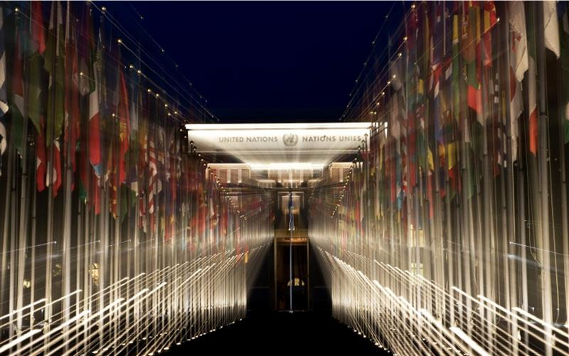

As the most representative international organization and the utmost expression of multilateralism, the United Nations is the main instrument to address multifaceted and complex global challenges through collective action.
PHOTO:© UN Photo/Mark Garten
SOURCE: UNITED NATIONS
International Day of Multilateralism and Diplomacy for Peace, 24 April
The Virtues of Multilateralism and Diplomacy
What is multilateralism?
Multilateralism is often defined in opposition to bilateralism and unilateralism. Strictly speaking, it indicates a form of cooperation between at least three States.
Nevertheless, this 'quantitative' definition is not sufficient to capture the nature of multilateralism. Indeed, it is not simply a practice or a question of the number of actors involved. It involves adherence to a common political project based on the respect of a shared system of norms and values. In particular, multilateralism is based on founding principles such as consultation, inclusion and solidarity. Its operation is determined by collectively developed rules that ensure sustainable and effective cooperation. In particular, they guarantee all actors the same rights and obligations by applying themselves continuously (and not on a case-by-case basis, depending on the issue handled).
Multilateralism is therefore both a method of cooperation and a form of organization of the international system.

History of Multilateralism
Today, we live in a multilateral world. But what does that mean? Answering this question involves looking at the meaning of multilateralism, understanding its nature and its place in the workings of the international system.
Reinvigorate multilateralism for a Better Tomorrow
With world leaders set to convene at the UN Summit of the Future this September to reaffirm their dedication to peace, sustainable development, and protection of human rights, the importance of multilateralism and diplomacy is more paramount than ever.
The United Nations, the multilateral framework par excellence.
Multilateralism is part of the United Nations' DNA. The Charter does not simply define the structure, mission and functioning of the Organization. It is one of the pillars of the international system in which we live today. In his report on the work of the United Nations to the General Assembly in 2018, the United Nations Secretary-General António Guterres recalled that the Charter remains the 'moral compass to promote peace, advance human dignity, prosperity and uphold human rights and the rule of law.' (Guterres, 2018).
The UN is at the service of Member States to reach agreements and take collective decisions. The Charter clearly establishes that the Organization is a “centre for harmonizing the actions of nations in the attainment of these common ends” in order to “take effective collective measures for the prevention and removal of threats to the peace”, to “develop friendly relations among nations based on respect for the principle of equal rights and self-determination of peoples” and to “achieve international cooperation”. To this end, the United Nations must, in particular, work to solve “international problems of an economic, social, cultural, or humanitarian character” and develop “respect for human rights and for fundamental freedoms for all”.
While the United Nations has been the multilateral framework par excellence for more than 75 years, multilateral processes have diversified. One of the most visible developments in multilateral diplomacy is undoubtedly represented by the increase in the number of Member States: from 51 in 1945, to 193 today. In addition to this horizontal expansion, the multilateral framework has also expanded vertically, including new actors, such as non-governmental organizations (NGOs), private actors and other international organizations. Today, more than 1,000 NGOs and international organizations have observer status at the United Nations.
Multilateralism has achieved tangible results that have led to major advances, such as for example the eradication of smallpox in the health sector. Important international agreements have also been concluded to limit arms control and to promote and strengthen human rights. The international cooperation within the multilateral framework of the United Nations is saving lives every day.
Background
The United Nations came into being in 1945, following the devastation of the Second World War, with one central mission: the maintenance of international peace and security. The Charter of the United Nations states that one of the United Nations' purposes and principles is the commitment to settle disputes through peaceful means and the determination to succeeding generations from the scourge of war.
Conflict prevention remains, however, a relatively under-publicized aspect of the UN's work. Meanwhile, the most efficient and desirable employment of diplomacy is to ease tensions before they result in conflict, or, if conflict breaks out, to act swiftly to contain it and resolve its underlying causes. Preventive diplomacy is very important in supporting United Nations efforts to assist in the peaceful settlement of disputes.
Commitment to multilateralism and international peace and security was also reaffirmed by most world leaders in the General Debate in September 2018. This commitment was also reinforced in the discussion during the High-level Dialogue on Renewing the Commitment to Multilateralism on 31 October 2018.
On 12 December 2018, the General Assembly adopted the resolution, 'International Day of Multilateralism and Diplomacy for Peace' (A/RES/73/127) by a recorded vote of 144 in favour to 2 against. By that text, the General Assembly invites all Member States, observers and organizations of the United Nations to observe the International Day in an appropriate manner and to disseminate the advantages of multilateralism and diplomacy for peace, including through educational and public awareness-raising activities.
SOURCE: UNITED NATIONS